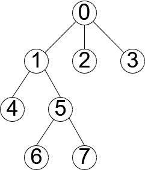

概略
根付き木における2頂点の共通祖先のうち，最も深いものを示す．
目次
アルゴリズム
Euler Tourで木に対する情報を拾った後，RMQでLCAを求める．
例として下図の木にアルゴリズムを用いる．

Euler Tour
木をDFSする．欲しい情報は以下の通り．
nodeOrder[i]: $i$ 番目に訪問した頂点番号depthOrder[i]: $i$ 番目に訪問した頂点の深さ（根を0とする）nodeFirstID[v]: 頂点 $v$ が最初に現れるタイミング
| $i$ | 0 | 1 | 2 | 3 | 4 | 5 | 6 | 7 | 8 | 9 | 10 | 11 | 12 | 13 | 14 |
|---|---|---|---|---|---|---|---|---|---|---|---|---|---|---|---|
nodeOrder[i] |
0 | 1 | 4 | 1 | 5 | 6 | 5 | 7 | 5 | 1 | 0 | 2 | 0 | 3 | 0 |
depthOrder[i] |
0 | 1 | 2 | 1 | 2 | 3 | 2 | 3 | 2 | 1 | 0 | 1 | 0 | 1 | 0 |
| $v$ | 0 | 1 | 2 | 3 | 4 | 5 | 6 | 7 |
|---|---|---|---|---|---|---|---|---|
nodeFirstID[v] |
0 | 1 | 11 | 13 | 2 | 4 | 5 | 7 |
nodeOrderのサイズは必ず頂点数*2-1になる．これは各辺を2回通ることに由来する．
RMQ (Range Minimum Query)
頂点 $u$ と $v$ のLCAは，$u$ から $v$ まで順に訪問した頂点のうち最も浅い（深さの小さい）ものである．これを効率的に求めるのがRMQである．
頂点 $4$ と $7$ のLCAを求める．まず頂点の訪問順を調べる．
| $v$ |
0 | 1 | 2 | 3 | 4 |
5 | 6 | 7 |
|---|---|---|---|---|---|---|---|---|
nodeFirstID[v] |
0 | 1 | 11 | 13 | 2 |
4 |
5 | 7 |
したがって $4$ と $7$ のLCAは以下の色付き部分のうち最も浅い頂点であり，今回は $1(i=3)$ であることが分かる．
| $i$ |
0 | 1 | 2 | 3 | 4 |
5 | 6 | 7 | 8 | 9 | 10 | 11 | 12 | 13 | 14 |
|---|---|---|---|---|---|---|---|---|---|---|---|---|---|---|---|
nodeOrder[i] |
0 | 1 | 4 | 1 | 5 | 6 | 5 | 7 | 5 | 1 | 0 | 2 | 0 | 3 | 0 |
depthOrder[i] |
0 | 1 | 2 | 1 | 2 | 3 | 2 | 3 | 2 | 1 | 0 | 1 | 0 | 1 | 0 |
実装例
- LCA$(V,root,edge)$ := 頂点数 $V$，根 $root$ の根付き木 $edge$ に対する，EulerTourとRMQの構成．
- $O(V)$
- get$(u,v)$ := 頂点 $u$ と $v$ のLCAを求める．
- $O(\log{V})$
verify
LCA: Lowest Common Ancestor - GRL_5_C — AIZU ONLINE JUDGE
D: 閉路 - AtCoder Beginner Contest 014 — AtCoder